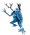
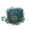
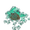
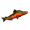

极北之地
本站支持中英文站内搜索。带 ↗ 的链接指向外部网站；各页来源版本见页脚。

极北之地位于英灵神殿最北端，是广阔积雪的生物群系，被形容为“圣诞风景明信片”。与烈焰灰烬之地的成群敌人相比，这里生物更少，但更强。
与灰烬之地类似，北方深境由无尽之海与其他生物群系隔开，北侧接壤世界边缘。没有类似沸海的屏障阻止进入，但推进这里的进度仍需击败青焰龙王，强敌也构成威胁。岸边漂浮冰层可能危及试图靠岸的船只。
与山地一样，北方深境昼夜所有天气都算严寒。没有抗霜衣物或抗霜蜜酒效果时，玩家在室外会持续受到冻僵伤害，详见下方天气。
此生物群系是1.0更新的主要更新内容。
生物
敌对
- 灰矮人（极北之境）

灰矮人萨满（北方深境） 骷髅怪
骷髅怪 驼鹿
驼鹿 灰巨人
灰巨人 厄妖
厄妖 无眼者
无眼者 堕落战士
堕落战士 巨魔长老
巨魔长老 巨人巫师
巨人巫师 巨人战士
巨人战士 丑地精俘虏
丑地精俘虏 被囚禁的矮人
被囚禁的矮人
无形黏团
超小浆块
被动
- 海豹

北境鲑鱼 影子,从不攻击
影子,从不攻击
生成
以下生物会在北方深境自然生成。只有世界中已有巨人战士或巨人巫师被杀死后，这两种生物才会在开放区域游荡。
| 生物 | 时间 | 附近数量上限 | 每组数量 | 星级 | 说明 |
|---|---|---|---|---|---|
| 海豹 | 白天 与夜 间 | 5 | 1–2 | 0–2 | 海岸上 |
| 海豹宝宝 | 白天 与夜 间 | 3 | 1–3 | 0 | 海岸上 |
| 灰矮人（极北之境） | 白天 与夜 间 | 5 | 2–4 | 0–2 | 海拔10米以上 |
| 灰矮人萨满（北方深境） | 白天 与夜 间 | 1 | 2–4 | 0–2 | 海拔10米以上 |
| 白天 与夜 间 | 5 | 2–4 | 0–2 | 海拔10米以上 | |
| 夜 间 | 5 | 2–4 | 0–2 | 森林中，海拔10米以上 | |
| 夜 间 | 2 | 2–3 | 0–1 | ||
| 夜 间 | 1 | 1–2 | 0–1 | ||
| 白天 与夜 间 | 3 | 1 | 0–2 | ||
| 白天 与夜 间 | 1 | 1 | 0 | ||
| 白天 与夜 间 | 1 | 1 | 0 | 海拔10米以上 | |
| 白天 | 2 | 1–2 | 0 | 一只巨人战士或巨人巫师被杀死后 | |
| 白天 | 2 | 1 | 0 | 一只巨人战士或巨人巫师被杀死后 | |
| 北境鲑鱼 | 白天 与夜 间 | 10 | 3–10 | 深度超过5米的水中 |
资源
来自地形

 森林主要由巨木冷杉组成，也有较小的雪杉、老树桩和倒木，都产出巨木。地面雪枝可拾取为巨木，也可拾取雪球。越橘灌木散布各处，偶尔还有野生羽衣甘蓝，采集后获得三份羽衣甘蓝种子。
森林主要由巨木冷杉组成，也有较小的雪杉、老树桩和倒木，都产出巨木。地面雪枝可拾取为巨木，也可拾取雪球。越橘灌木散布各处，偶尔还有野生羽衣甘蓝，采集后获得三份羽衣甘蓝种子。

 岸边水面覆盖浮冰，破坏后可获得三至五份冰霜。冰冻的灰矮人和骷髅雕像也可破坏，获得冰和树脂。
岸边水面覆盖浮冰，破坏后可获得三至五份冰霜。冰冻的灰矮人和骷髅雕像也可破坏，获得冰和树脂。
，材料来源： 蜿蜒隧道
来自生物
天气
北方深境有三种天气，昼夜均算严寒和寒冷。
| 天气 | 机会 | 风 | 建筑积雪 |
|---|---|---|---|
| 晴朗（env Twilight_Clear） | 40% | 0.2–0.6 | 无 |
| 下雪（env Twilight_Snow） | 40% | 0.3–0.6 | 积聚 |
| 暴风雪（env Twilight_SnowStorm） | 20% | 1(最大限度) | 积累更快 |
风力上限为1。暴风雪的风力范围高于此上限，因此暴风雪期间始终满风力。
室外且远离火源时，玩家获得冻僵：生命值不恢复，耐力和埃达之能恢复速度降低60%，每秒受到一点伤害。靠近火源或有遮蔽时，改为寒冷：生命值恢复降低50%，耐力和埃达之能恢复降低25%。遮蔽内的火源可消除两者。轻微、正常或极高冰霜抗性都可阻止这两种效果。
下雪时，没有屋顶且不在护盾发生器护盾内的建筑会积雪，可用雪铲清除。
图片库


占位符生态区域


| 生物群系 | |||||||||||||||||||
|---|---|---|---|---|---|---|---|---|---|---|---|---|---|---|---|---|---|---|---|
| 重要 地点 |
| ||||||||||||||||||
| 资源 采集点 |
| ||||||||||||||||||
The Deep North is a vast, snowy biome, found in the northernmost part of Valheim. Described as a "postcard of a Christmas landscape", it contrasts the hordes of the fiery Ashlands with fewer but stronger creatures.
Akin to the Ashlands, the Deep North landmass is separated from other biomes by an Ocean and borders the World Edge on the northern side. There is no equivalent of the boiling sea preventing access to the biome, however, defeating Fader is still required to progress through the biome, and strong enemies pose a threat. Sheets of ice float along the shores, a potential danger to any ship attempting to dock here.
As in the Mountains, all weather in the Deep North is freezing, day and night, so players without frost resistant clothes or Frost Resistance Mead in effect take continuous freezing damage outdoors. See Weather below.
The biome was the focus of the 1.0 update.
Creatures
Hostile
- Greydwarf (Deep North)
- Greydwarf Shaman (Deep North)
- Skeleton
- Moose
- Barka
- Elaking
- Eyeless One
- Fallen Warrior
- Gammeltroll
- Hexen
- Krigen
- Captive Fuling
- Imprisoned Dvergr
- Shapeless Pulp
- Tiny Pulp
Passive
- Seal
- Northern Salmon
- Shadow, which never attack
Spawns
The following creatures spawn naturally in the Deep North. Krigen and Hexen only roam the open biome after a Krigen or Hexen has been killed somewhere in the world.
| Creature | Time | Max nearby | Group size | Stars | Notes |
|---|---|---|---|---|---|
| Seal | Day and night | 5 | 1–2 | 0–2 | On the coast |
| Baby Seal | Day and night | 3 | 1–3 | 0 | On the coast |
| Greydwarf (Deep North) | Day and night | 5 | 2–4 | 0–2 | Above 10 meters altitude |
| Greydwarf Shaman (Deep North) | Day and night | 1 | 2–4 | 0–2 | Above 10 meters altitude |
| Day and night | 5 | 2–4 | 0–2 | Above 10 meters altitude | |
| Night | 5 | 2–4 | 0–2 | In forests, above 10 meters altitude | |
| Night | 2 | 2–3 | 0–1 | ||
| Night | 1 | 1–2 | 0–1 | ||
| Day and night | 3 | 1 | 0–2 | ||
| Day and night | 1 | 1 | 0 | ||
| Day and night | 1 | 1 | 0 | Above 10 meters altitude | |
| Day | 2 | 1–2 | 0 | After a Krigen or Hexen has been killed | |
| Day | 2 | 1 | 0 | After a Krigen or Hexen has been killed | |
| Northern Salmon | Day and night | 10 | 3–10 | In water deeper than 5 meters |
Resources
From terrain
The forests consist mostly of Timber Trees, along with smaller snowy firs, old stumps and fallen logs, all of which yield  Timberwood. Snowy branches lying on the ground can be picked up for Timberwood, and snowballs can be picked up as well. Lingonberry bushes are scattered across the biome, and wild Kale occasionally grows, giving three
Timberwood. Snowy branches lying on the ground can be picked up for Timberwood, and snowballs can be picked up as well. Lingonberry bushes are scattered across the biome, and wild Kale occasionally grows, giving three  Kale Seeds when picked.
Kale Seeds when picked.
Sheets of floating ice cover the water near the shore and can be broken for three to five  Ice. Frozen statues of Greydwarfs and Skeletons can also be broken for Ice and
Ice. Frozen statues of Greydwarfs and Skeletons can also be broken for Ice and  Resin.
Resin.
From Winding Tunnels
From creatures
 Petrified Tissue
Petrified Tissue Seal Pelt
Seal Pelt Seal Blubber
Seal Blubber Moose Meat
Moose Meat Moose Hide
Moose Hide Moose Sinew
Moose Sinew Elaking Hair Bundle
Elaking Hair Bundle Long Claws
Long Claws Frozen Branch
Frozen Branch
Weather
The Deep North has three kinds of weather. All of them count as freezing and cold, both day and night.
| Weather | Chance | Wind | Snow on structures |
|---|---|---|---|
| Clear (env Twilight_Clear) | 40% | 0.2–0.6 | None |
| Snowing (env Twilight_Snow) | 40% | 0.3–0.6 | Builds up |
| Blizzard (env Twilight_SnowStorm) | 20% | 1 (maximum) | Builds up faster |
Wind intensity is capped at 1. A blizzard's wind range lies above that cap, so the wind always blows at full strength during a blizzard.
A player outdoors and away from a fire gets the Freezing effect: no health regeneration, 60% slower stamina and eitr regeneration, and one point of damage every second. Near a fire or in shelter, the player gets the Cold effect instead (50% slower health regeneration, 25% slower stamina and eitr regeneration), and a fire in shelter removes both. Slight, normal or very high frost resistance prevents both effects.
While it snows, snow builds up on structures that have no roof above them and are not inside a Shield Generator's shield. It can be cleared with the Snow Shovel.
Gallery
Placeholder biome
| Biomes | Meadows • Black Forest • Ocean • Swamp • Mountain • Plains • Mistlands • Ashlands • Deep North • World Edge | ||||||||||||||||||
|---|---|---|---|---|---|---|---|---|---|---|---|---|---|---|---|---|---|---|---|
| Points of interest |
| ||||||||||||||||||
| Resource nodes |
| ||||||||||||||||||